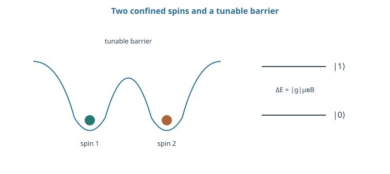
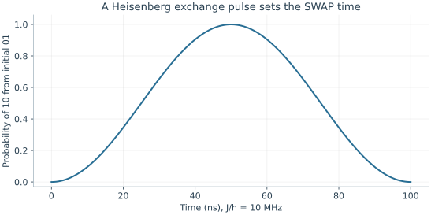

Starting point: Chapters 1–10; physical concepts and approximations are introduced as needed.
Anchor example: Two electron spins with a tunable exchange interaction.
This lesson includes explanations, worked examples, and problems with solutions. Advanced results whose proofs are outside the chapter are identified explicitly.
11.1 Spin Qubits
Can an electrical device use a spin to store information and charge motion only when it needs to operate on that information?
11.1.1 Confinement and Zeeman splitting
Electrostatic electrodes confine an electron in a quantum dot. Its motion has orbital energy levels, while a magnetic field splits its spin states. A magnetic moment in a field has energy \(-\vec{\mu}\cdot\mathbf B\); for the selected effective spin, the splitting is \(\Delta E=|g|\mu_BB\), with material-dependent g and Bohr magneton \(\mu_B\).
Label the lower spin state zero, so the qubit Hamiltonian is \(-\Delta EZ/2\). For \(|g|=2\), \(B=0.5\) T, and \(\mu_B/h\simeq14\) GHz/T, its frequency is 14 GHz. The sign of g determines the physical spin orientation of the lower state. Orbital and valley states remain outside the selected pair and must be sufficiently separated for the applied controls and temperatures.
11.1.2 Spin encodings
One electron spin supplies two basis states. A two-spin encoding might instead use \(\ket S=(\ket{01}-\ket{10})/\sqrt2\) and \(\ket{T_0}=(\ket{01}+\ket{10})/\sqrt2\). These alternatives have the same total spin projection and respond differently to exchange and magnetic-field differences.
For the single-spin case, spin-selective tunneling can initialize the lower state by placing the reservoir chemical potential between the two spin energies. The lower state remains occupied while the upper can leave and be replaced. This picture requires level widths and reservoir temperature small enough to resolve the splitting, together with controlled loading times. Thermal relaxation is another preparation route. Different encodings change which noise is suppressed and which control is accessible; using extra spins is not automatically error correction.

The orbital confinement and spin splitting are different energy scales. Exchange depends on wavefunction overlap across the barrier; physical dot positions alone do not specify the gate.
Problem 11.1. For \(|g|=2\), \(B=0.5\) T, and \(\mu_B/h\approx14\) GHz/T, find the spin frequency.
Worked solution
The frequency is 2 × 14 × 0.5 = 14 GHz. This is an illustrative effective-g model, not a universal value for semiconductor devices.
11.2 Electrical Control
11.2.1 Spin rotations
A transverse oscillating magnetic field changes the off-diagonal spin Hamiltonian. After moving to resonance, it yields the same Rabi rotations derived in Chapter 3. Electrical control can achieve a similar effect if an electric field moves the electron through a magnetic gradient: a displacement \(\delta x\) changes the field by \((\partial B/\partial x)\delta x\).
The resulting Rabi strength scales with \(|g|\mu_B(\partial B/\partial x)\delta x/\hbar\), with a factor depending on the definition of the oscillating component. Spin–orbit coupling is another route from electrical motion to spin rotation. These mechanisms make gate electrodes useful for spin control but also let charge fluctuations perturb the spin. Pulse amplitude and timing must be calibrated together with detuning and unwanted orbital excitation.
11.2.2 Exchange gates
For two nearby spins, write \(H=J\mathbf S_1\cdot\mathbf S_2\), where \(\mathbf S=(X,Y,Z)/2\) is dimensionless and J is an energy. The singlet has energy \(-3J/4\); all triplets have \(+J/4\). Their relative phase after time t is therefore \(e^{iJt/\hbar}\).
Since \(\ket{01}=(\ket{T_0}+\ket S)/\sqrt2\), the probability of finding 10 is \(\sin^2[Jt/(2\hbar)]\). At \(Jt/\hbar=\pi\), the singlet’s sign reverses relative to the triplets, implementing SWAP up to a global phase. Half that area gives an entangling square root of SWAP. With \(J/h=10\) MHz, these times are 50 ns and 25 ns. This derivation fixes the convention rather than importing an exchange time from a differently normalized Hamiltonian.

The stated exchange-energy convention gives SWAP at 50 ns and an equal-weight entangling state at 25 ns. This differs from the angular-frequency g convention in Chapter 4.
Problem 11.2. If \(J/h=10\) MHz, how long is a SWAP exchange pulse?
Worked solution
\(Jt/\hbar=2\pi(10^7)t=\pi\), so \(t=50\) ns; the square-root pulse takes 25 ns in the ideal constant-exchange model.
11.3 Readout and Integration
11.3.1 Spin-to-charge conversion
A charge sensor does not directly measure spin. A conversion step first makes the charge configuration depend on spin. In energy-selective tunneling, the upper spin can leave for a reservoir while the lower cannot. In suitable two-electron devices, Pauli blockade uses the different accessibility of charge configurations for singlet and triplet states.
Let c be the chance that the conversion produces the correct charge label, and d the detector’s chance of reading that label correctly, with symmetric independent errors. Spin assignment is correct either when both stages are correct or when both are wrong: \(P_{\rm correct}=cd+(1-c)(1-d)\). Perfect charge detection, d=1, still leaves success c. Temperature, tunnel rates, and the integration window enter before the final electronic discrimination.
11.3.2 Disorder, wiring, and uniformity
In a simple two-site model, virtual tunneling gives exchange \(J\simeq4t_c^2/U\), where \(t_c\) is a tunneling energy and U the cost of double occupation. This expression assumes tunneling is weak compared with U and omits additional levels. A small fractional tunnel variation produces \(\delta J/J\simeq2\delta t_c/t_c\), showing why a voltage-sensitive barrier can also be a noise-sensitive gate.
Nuclear spins, charge fluctuations, disorder, and valley structure need different controls and materials strategies. Dense placement alone does not provide uniform operation: gates, reservoirs, sensors, and wiring all occupy space. Benchmark exchange and spin rotations with neighboring devices active and include the calibration effort needed to keep those parameters stable.
Problem 11.3. Can perfect charge detection guarantee perfect spin readout?
Worked solution
No. The spin-to-charge conversion may have failed before detection. The measured assignment error combines both stages and preparation errors unless independently calibrated.
A crystal defect can also localize an electronic spin, with an optical transition offering a route between stationary and flying information.
Worked model check. Let J/h=5 MHz in the stated Heisenberg model. Find the times for SWAP and its entangling square root.
Worked solution
\(Jt/\hbar=\pi\) gives 100 ns for SWAP; half that area gives 50 ns. These values assume constant exchange and negligible competing terms.
These exercises draw on the whole chapter. Attempt each question before opening a hint, explain your reasoning, then compare it with the worked solution.
An electron spin with \(|g|=2\) sits in \(B=0.2\) T, with \(\mu_B/h\approx14\) GHz/T. Find the qubit frequency and its thermal excited population at an electron temperature of \(100\) mK, using \(hf/k_B\approx0.048\) K per GHz.
Hint 1
\(f=|g|(\mu_B/h)B\).
Hint 2
\(p_1=1/(1+e^{hf/k_BT})\).
Worked solution
\(f=2\times14\times0.2=5.6\) GHz. Then \(hf/k_B\approx0.27\) K, so at \(100\) mK the ratio is \(2.7\) and \(p_1\approx1/(1+e^{2.7})\approx0.064\). Thermal preparation at this field and temperature leaves over \(6\%\) excited, so spin-selective tunneling or a higher field is needed for good initialization.
With \(H=J\mathbf S_1\cdot\mathbf S_2\) and \(J/h=2\) MHz, find the SWAP time and the \(\sqrt{\mathrm{SWAP}}\) time. What state does \(\sqrt{\mathrm{SWAP}}\) make from \(\ket{01}\)?
Hint 1
SWAP at \(Jt/\hbar=\pi\): \(t=1/(2J/h)\).
Hint 2
\(\ket{01}=(\ket{T_0}+\ket S)/\sqrt2\).
Worked solution
SWAP: \(t=1/(2\times2\ \text{MHz})=250\) ns; \(\sqrt{\mathrm{SWAP}}\): \(125\) ns. At \(Jt/\hbar=\pi/2\), the singlet has gained relative phase \(e^{i\pi/2}=i\), so \(\ket{01}\to\frac{1}{\sqrt2}(\ket{T_0}+i\ket S)=\frac{1+i}{2}\ket{01}+\frac{1-i}{2}\ket{10}\), an equal-weight entangled state.
Spin-to-charge conversion succeeds with \(c=0.98\) and the charge detector reads correctly with \(d=0.99\). Find the spin assignment fidelity \(cd+(1-c)(1-d)\). Which stage limits it?
Hint 1
\(0.98\times0.99+0.02\times0.01\).
Hint 2
Compare the error of each stage.
Worked solution
\(P_{\rm correct}=0.9702+0.0002\approx0.970\). The conversion error (\(2\%\)) dominates the detector error (\(1\%\)); improving the charge sensor alone to perfect would raise fidelity only to \(0.98\). Readout must be optimized at the stage that sets the error.
Exchange depends on a tunnel coupling as \(J\simeq4t_c^2/U\). (a) A \(1\%\) error in \(t_c\) gives what fractional error in \(J\)? (b) For an intended \(\sqrt{\mathrm{SWAP}}\) (\(Jt/\hbar=\pi/2\)), estimate the resulting phase error and gate infidelity \((\delta\phi/2)^2\). (c) Why does this make barrier-gate voltage noise important?
Hint 1
\(\delta J/J=2\delta t_c/t_c\).
Hint 2
Phase error \(=(\pi/2)(\delta J/J)\).
Worked solution
(a) \(\delta J/J\approx2\times1\%=2\%\). (b) The exchange phase is off by \((\pi/2)\times0.02\approx0.031\) rad, giving infidelity of order \((0.031/2)^2\approx2.5\times10^{-4}\). (c) \(t_c\) is set by a gate voltage through an exponential tunnel barrier, so small voltage fluctuations produce larger fractional changes in \(t_c\), and twice that in \(J\). Charge noise on the barrier therefore shows up directly as two-qubit gate error.
Two dots have Zeeman energies differing by \(\Delta E_z/h=50\) MHz (for example from a magnetic gradient), and exchange is off. (a) Show that \(\ket{01}\) and \(\ket{10}\) are split by \(\Delta E_z\). (b) Starting from the singlet \(\ket S\), how long until it has fully converted to \(\ket{T_0}\)? (c) How does this give a second control axis for a singlet–triplet qubit?
Hint 1
\(\ket S\) and \(\ket{T_0}\) are equal superpositions of \(\ket{01}\) and \(\ket{10}\) with opposite relative signs.
Hint 2
Full conversion when the relative phase of \(\ket{01}\) and \(\ket{10}\) reaches \(\pi\).
Worked solution
(a) Each spin contributes \(\mp E_i/2\), so \(\ket{01}\) and \(\ket{10}\) differ in energy by \(E_1-E_2=\Delta E_z\). (b) The relative phase between \(\ket{01}\) and \(\ket{10}\) grows as \(\Delta E_zt/\hbar\); when it reaches \(\pi\), \(\frac{1}{\sqrt2}(\ket{01}-\ket{10})\) has become \(\frac{1}{\sqrt2}(\ket{01}+\ket{10})\) up to a phase. That takes \(t=h/(2\Delta E_z)=10\) ns. (c) Exchange splits \(\ket S\) from \(\ket{T_0}\) (a \(Z\)-like axis in that basis), while the field difference mixes them (an \(X\)-like axis), so pulsing \(J\) and using the gradient gives full control of the two-spin qubit.
In energy-selective readout, an excited spin tunnels out with mean time \(\tau_{\rm out}=10\) μs, the readout window is \(50\) μs, and the excited spin relaxes with \(T_1=1\) ms. (a) Estimate the probability that an excited spin tunnels within the window. (b) Estimate the probability that it relaxes before tunneling. (c) Combine them into the conversion success \(c\) for an excited spin.
Hint 1
\(P(\text{tunnel within }T)=1-e^{-T/\tau_{\rm out}}\).
Hint 2
Relaxing first has probability about \(\tau_{\rm out}/(\tau_{\rm out}+T_1)\).
Worked solution
(a) \(1-e^{-5}\approx0.993\). (b) The two processes compete; relaxation wins with probability about \(\tau_{\rm out}/(\tau_{\rm out}+T_1)\approx0.010\). (c) \(c\approx0.993\times0.990\approx0.98\) for an excited spin. A longer window helps (a) but raises the chance of thermally activated tunneling of the ground spin; faster tunneling helps both (a) and (b) but must stay slow enough for the charge sensor to resolve the event.
An electron is driven electrically back and forth by \(\delta x\) in a magnetic gradient \(\partial B/\partial x=1\) mT/nm, with \(|g|=2\) and \(\mu_B/h\approx14\) GHz/T. (a) For \(\delta x=1\) pm, estimate the oscillating field and the frequency scale \(|g|(\mu_B/h)\delta B\). (b) Repeat for \(\delta x=10\) pm. (c) Why does a large gradient also make the qubit more sensitive to charge noise?
(a) \(\delta B=1\ \mu\)T, giving a frequency scale \(2\times14\ \text{GHz/T}\times10^{-6}\ \text{T}=28\) kHz (the Rabi frequency is of this order, up to a convention factor), so a \(\pi\) pulse takes tens of microseconds. (b) \(10\) pm gives \(280\) kHz and pulses of a few microseconds. (c) Any electric fluctuation that moves the electron also moves it through the gradient and shifts its spin frequency, so the same coupling that enables fast electrical control converts charge noise into dephasing. Device design balances drive speed against this sensitivity.
A student takes the exchange rate \(g/2\pi=10\) MHz from a paper using \(H=\hbar g(XX+YY)/2\) and plugs it into the formula “SWAP at \(Jt/\hbar=\pi\)” with \(J/h=10\) MHz, predicting \(50\) ns. The paper’s SWAP time is \(25\) ns. Explain the discrepancy.
Hint 1
Chapter 4 found full exchange at \(gt=\pi/2\).
Hint 2
The two Hamiltonians normalize the coupling differently.
Worked solution
In the \(XX+YY\) convention with angular frequency \(g\), full swap occurs at \(gt=\pi/2\), so \(g/2\pi=10\) MHz gives \(t=1/(4\times10\ \text{MHz})=25\) ns. In the Heisenberg convention \(J\mathbf S_1\cdot\mathbf S_2\) with \(J\) an energy, SWAP occurs at \(Jt/\hbar=\pi\), giving \(50\) ns for \(J/h=10\) MHz. The two coupling constants differ by normalization (spin-\(\frac12\) operators versus Pauli matrices, energy versus angular frequency, and the presence of a \(ZZ\) term). Numbers cannot be transferred between papers without matching the Hamiltonian they refer to.
Random nuclear spins produce a quasi-static field that varies from run to run, giving a Gaussian spread of qubit frequencies with standard deviation \(\sigma_f\). Using \(T_2^*=\sqrt2/(2\pi\sigma_f)\) from Chapter 6, compare a natural GaAs-like host with \(\sigma_f=10\) MHz and an isotopically purified silicon-like host with \(\sigma_f=10\) kHz. What does echo do in each case, and what does the comparison say about materials choice?
Hint 1
\(\sqrt2/(2\pi\times10^7)\approx22.5\) ns.
Hint 2
An echo refocuses noise that is constant within a run.
Worked solution
The GaAs-like host gives \(T_2^*\approx22.5\) ns; the purified silicon-like host gives about \(22.5\) μs, a thousand times longer. In both cases echo removes the quasi-static part, so echo coherence is limited by how fast the nuclear field changes during a run. Removing nuclear spins altogether, by purifying the host isotope, eliminates the noise source rather than refocusing it, which is why material choice is one of the most powerful levers for spin qubits.
A crossbar addresses an \(N\times N\) array of dots with \(2N\) shared lines, so each dot is controlled by the intersection of a row and a column. (a) Compare the number of lines with one line per dot for \(N=100\). (b) Why does this require uniformity: suppose dot frequencies scatter by \(\pm20\) MHz while a shared pulse has bandwidth \(1\) MHz. (c) What are two ways to cope?
Hint 1
\(2N=200\) versus \(N^2=10^4\).
Hint 2
A shared pulse can only address dots within its bandwidth.
Worked solution
(a) \(200\) lines instead of \(10^4\), a fifty-fold saving that grows with \(N\). (b) Shared lines apply the same pulse to many dots; if their frequencies scatter by tens of megahertz while the pulse is resonant within about a megahertz, a single pulse cannot rotate them all, and different dots need different frequencies, which the shared line cannot supply simultaneously. (c) Improve fabrication uniformity, or use local tuning (individual gate voltages that shift each dot into resonance) and frequency-multiplexed pulses. Wiring savings are only available if variability is controlled.